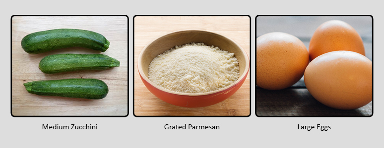

Toggle navigation
Home
Recipes
Bruschetta
Classic Deviled Eggs
Kebab
Fried Zucchini
Glossary
Fried Zucchini
Ingredients
Olive oil, for frying
1 3/4 cups freshly grated Parmesan
1 1/2 cups panko (Japanese breadcrumbs)
3/4 teaspoon salt
2 large eggs
3 medium zucchini, cut into 3-inch long by 1/2-inch wide strips

Directions
Pour enough oil into a large frying pan to reach a depth of 2 inches.
Heat the oil over medium heat until a deep-fry thermometer registers 350 degrees F.
Stir 1 1/2 cups Parmesan, the panko, and salt in a medium bowl to blend.
Whisk the eggs in another medium bowl to blend.
Working in batches, dip the zucchini in the eggs to coat completely and allow the excess egg to drip back into the bowl.
Coat the zucchini in the panko mixture, patting to adhere and coat completely.
Place the zucchini strips on a baking sheet.
When the oil is hot, working in batches, fry the zucchini sticks until they are golden brown, about 3 minutes.
Using a slotted spoon, transfer the fried zucchini to paper towels and drain.
Arrange the fried zucchini on a platter.
Coat the zucchini in the panko mixture, patting to adhere and coat completely.
Total: 25 min
Prep: 15 min
Cook: 10 min
Yield: 4 servings
Level: Intermediate